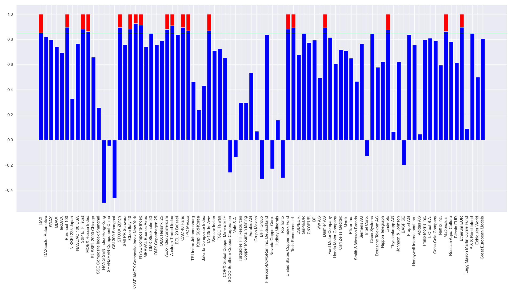
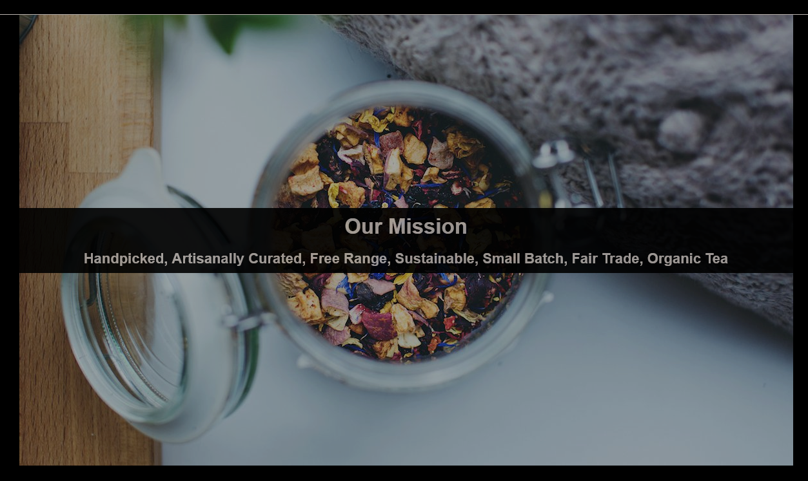

About me
I am one of the first to recognize that machines have applications beyond pure calculation, and to have published the first algorithm intended to be carried out by such a machine. In my free time I like to read about scientific developments, mathematics, and computational mathematics. I also like to take my chances of winning big.
Fun fact! I've been programing for NaN seconds!

Projects
Python brass and stock analyzer
My work inspired the United States Department of Defense to name their new programming language after me.
Teashop-Project from Codecademy
Build a webpage for a neat Teashop. I was using HTML, CSS and Git. I was working with the phpStorm IDE (Jetbrains).